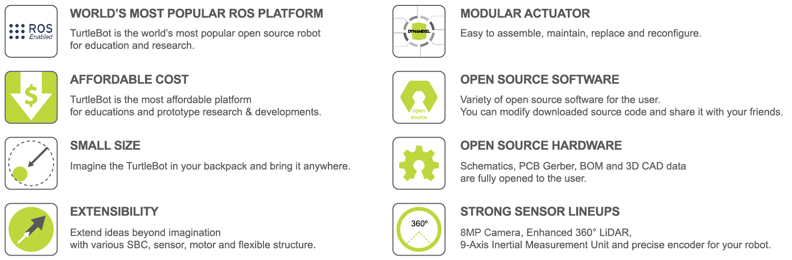
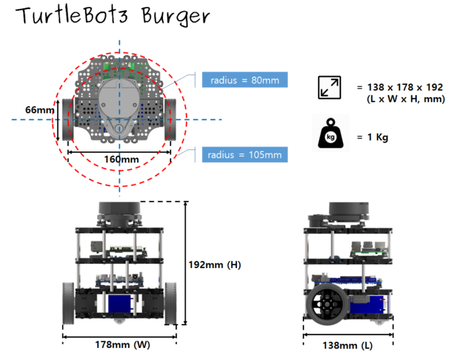
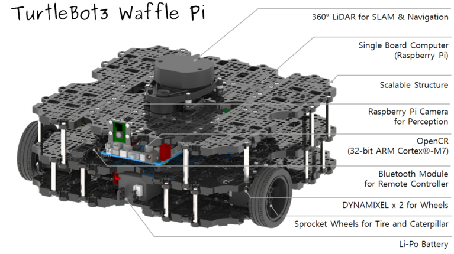

Features

 Click here to expand more details about each features
Click here to expand more details about each features
World’s Most Popular ROS Platform
- TurtleBot is the most popular open source robot for education and research. The new generation
TurtleBot3is asmall,low cost,fully programmable,ROS based mobile robot. It is intended to be used for education, research, hobby and product prototyping.
Affordable Cost
- TurtleBot was developed to meet the cost-conscious needs of schools, laboratories and companies. TurtleBot3 is the most affordable robot among the SLAM-able mobile robots equipped with a 360° Laser Distance Sensor LDS-01.
Small Size
- The dimension of TurtleBot3 Burger is only 138mm x 178mm x 192mm (L x W x H). Its size is about 1/4 of the size of the predecessor. Imagine keeping TurtleBot3 in your backpack and develop your program and test it anywhere you go.
ROS Standard
- The TurtleBot brand is managed by Open Robotics, which develops and maintains ROS. Nowadays, ROS has become the go-to platform for all the roboticists around the world. TurtleBot can be integrated with existing ROS-based robot components, but TurtleBot3 can be an affordable platform for whom want to get started learning ROS.
Extensibility
- TurtleBot3 encourages users to customize its mechanical structure with some alternative options: open source embedded board (as a control board), computer and sensors. TurtleBot3 Burger is a two-wheeled differential drive type platform but it is able to be structurally and mechanically customized in many ways: Cars, Bikes, Trailers and so on. Extend your ideas beyond imagination with various SBC, sensors and motors on a scalable structure.
Modular Actuator for Mobile Robot
- TurtleBot3 is able to get a precise spatial data by using 2 DYNAMIXEL’s in the wheel joints. DYNAMIXEL XM series can be operated by one of 6 operating modes(XL series: 4 operating modes): Velocity control mode for wheels, Torque control mode or Position control mode for joint, etc. DYNAMIXEL can be used even to make a mobile manipulator which is light but can be precisely controlled with velocity, torque and position control. DYNAMIXEL is a core component that makes TurtleBot3 perfect. It is easy to assemble, maintain, replace and reconfigure.
Open Control Board for ROS
- The control board is open-sourced in hardware wise and in software wise for ROS communication. The open source control board OpenCR1.0 is powerful enough to control not only DYNAMIXEL’s but also ROBOTIS sensors that are frequently being used for basic recognition tasks in cost effective way. Various sensors such as Touch sensor, Infrared sensor, Color sensor and a handful more are available. The OpenCR1.0 has an IMU sensor inside the board so that it can enhance precise control for countless applications. The board has 3.3V, 5V, 12V power supplies to reinforce the available computer device lineups.
Strong Sensor Lineups
- TurtleBot3 Burger uses enhanced 360° LiDAR, 9-Axis Inertial Measurement Unit and precise encoder for your research and development. TurtleBot3 Waffle is equipped with an identical 360° LiDAR as well but additionally proposes a powerful Intel® RealSense™ with the recognition SDK. TurtleBot3 Waffle Pi uses high utilized Raspberry Pi Camera. This will be the best hardware solution for making a mobile robot.
Open Source
- The hardware, firmware and software of TurtleBot3 are open
source which means that users are welcomed to download, modify and share
source codes. All components of TurtleBot3 are manufactured with
injection molded plastic to achieve low cost, however, the 3D CAD data
is also available for 3D printing.
The 3D CAD data is released via Onshape which is a full-cloud 3D CAD editor. Users can get an access with a web browser on desktop PC, laptop and even portable devices. Onshape allows to draw 3D models and to assemble them with colleagues. Besides, for the users who want to make OpenCR1.0 board by themselves, all details of the OpenCR1.0 board such as schematics, PCB gerber files, BOM and firmware source code are fully opened under the open-source licenses for users and ROS community. You can modify downloaded source code and hardware to share it with your friends.
Specifications

Hardware Specifications
| Items | Burger | Waffle Pi |
|---|---|---|
| Maximum translational velocity | 0.22 m/s | 0.26 m/s |
| Maximum rotational velocity | 2.84 rad/s (162.72 deg/s) | 1.82 rad/s (104.27 deg/s) |
| Maximum payload | 15kg | 30kg |
| Size (L x W x H) | 138mm x 178mm x 192mm | 281mm x 306mm x 141mm |
| Weight (+ SBC + Battery + Sensors) | 1kg | 1.8kg |
| Threshold of climbing | 10 mm or lower | 10 mm or lower |
| Expected operating time | 2h 30m | 2h |
| Expected charging time | 2h 30m | 2h 30m |
| SBC (Single Board Computers) | Raspberry Pi | Raspberry Pi |
| MCU | 32-bit ARM Cortex®-M7 with FPU (216 MHz, 462 DMIPS) | 32-bit ARM Cortex®-M7 with FPU (216 MHz, 462 DMIPS) |
| Remote Controller | - | RC-100B + BT-410 Set (Bluetooth 4, BLE) |
| Actuator | XL430-W250 | XM430-W210 |
| LDS(Laser Distance Sensor) | 360 Laser Distance Sensor LDS-01 or LDS-02 | 360 Laser Distance Sensor LDS-01 or LDS-02 |
| Camera | - | Raspberry Pi Camera Module v2.1 |
| IMU | Gyroscope 3 Axis Accelerometer 3 Axis |
Gyroscope 3 Axis Accelerometer 3 Axis |
| Power connectors | 3.3V / 800mA 5V / 4A 12V / 1A |
3.3V / 800mA 5V / 4A 12V / 1A |
| Expansion pins | GPIO 18 pins Arduino 32 pin |
GPIO 18 pins Arduino 32 pin |
| Peripheral | UART x3, CAN x1, SPI x1, I2C x1, ADC x5, 5pin OLLO x4 | UART x3, CAN x1, SPI x1, I2C x1, ADC x5, 5pin OLLO x4 |
| DYNAMIXEL ports | RS485 x 3, TTL x 3 | RS485 x 3, TTL x 3 |
| Audio | Several programmable beep sequences | Several programmable beep sequences |
| Programmable LEDs | User LED x 4 | User LED x 4 |
| Status LEDs | Board status LED x 1 Arduino LED x 1 Power LED x 1 |
Board status LED x 1 Arduino LED x 1 Power LED x 1 |
| Buttons and Switches | Push buttons x 2, Reset button x 1, Dip switch x 2 | Push buttons x 2, Reset button x 1, Dip switch x 2 |
| Battery | Lithium polymer 11.1V 1800mAh / 19.98Wh 5C | Lithium polymer 11.1V 1800mAh / 19.98Wh 5C |
| PC connection | USB | USB |
| Firmware upgrade | via USB / via JTAG | via USB / via JTAG |
| Power adapter (SMPS) | Input : 100-240V, AC 50/60Hz, 1.5A @max Output : 12V DC, 5A |
Input : 100-240V, AC 50/60Hz, 1.5A @max Output : 12V DC, 5A |
Dimension and Mass
Data of TurtleBot3 Burger

Data of TurtleBot3 Waffle Pi

Components


Parts List
TurtleBot3 is available in two types of models: Burger and Waffle Pi.
The following table shows the lists of components. The major differences
between two models are the actuators, the SBC(Single Board Computer)
and the Sensors.
| Part Name | Burger | Waffle Pi | |
|---|---|---|---|
| Chassis Parts | Waffle Plate | 8 | 24 |
| . | Plate Support M3x35mm | 4 | 12 |
| . | Plate Support M3x45mm | 10 | 10 |
| . | PCB Support | 12 | 12 |
| . | Wheel | 2 | 2 |
| . | Tire | 2 | 2 |
| . | Ball Caster | 1 | 2 |
| . | Camera Bracket | 0 | 1 |
| Motors | DYNAMIXEL (XL430-W250-T) | 2 | 0 |
| . | DYNAMIXEL (XM430-W210-T) | 0 | 2 |
| Boards | OpenCR1.0 | 1 | 1 |
| . | *Raspberry Pi | 1 | 1 |
| . | USB2LDS | 1 | 1 |
| Remote Controllers | BT-410 Set (Bluetooth 4, BLE) | 0 | 1 |
| . | RC-100B (Remote Controller) | 0 | 1 |
| Sensors | **LDS-01 or LDS-02 | 1 | 1 |
| . | Raspberry Pi Camera v2.1 | 0 | 1 |
| Memorys | MicroSD Card | 1 | 1 |
| Cables | Raspberry Pi Power Cable | 1 | 1 |
| . | Li-Po Battery Extension Cable | 1 | 1 |
| . | DYNAMIXEL to OpenCR Cable | 2 | 2 |
| . | USB Cable | 2 | 2 |
| . | Camera Cable | 0 | 1 |
| Powers | SMPS 12V5A | 1 | 1 |
| . | A/C Cord | 1 | 1 |
| . | LIPO Battery 11.1V 1,800mAh | 1 | 1 |
| . | LIPO Battery Charger | 1 | 1 |
| Tools | Screw driver | 1 | 1 |
| . | Rivet tool | 1 | 1 |
| Miscellaneous | PH_M2x4mm_K | 8 | 8 |
| . | PH_T2x6mm_K | 4 | 8 |
| . | PH_M2x12mm_K | 0 | 4 |
| . | PH_M2.5x8mm_K | 16 | 16 |
| . | PH_M2.5x12mm_K | 0 | 20 |
| . | PH_T2.6x12mm_K | 16 | 0 |
| . | PH_M2.5x16mm_K | 4 | 4 |
| . | PH_M3x8mm_K | 44 | 140 |
| . | NUT_M2 | 0 | 4 |
| . | NUT_M2.5 | 20 | 24 |
| . | NUT_M3 | 16 | 96 |
| . | Rivet_1 | 14 | 22 |
| . | Rivet_2 | 2 | 2 |
| . | Spacer | 4 | 4 |
| . | Silicone Spacer | 0 | 4 |
| . | Bracket | 5 | 6 |
| . | Adapter Plate | 1 | 1 |
* Raspberry Pi 3 Model B+ is applied since 2019. Earlier model is equipped with Raspberry Pi 3 Model B.
* Raspberry Pi 4 Model B is applied since 2021 September.
** LDS-02 is applied since 2022.
TurtleBot3 Waffle is discontinued due to the EOL of Intel® Joule™ 570x.
Open Source Hardware
Core components of Turtlebot3 are the followings: Chassis, Motors, Wheels, OpenCR, SBC, Sensors and Battery. The chassis are Waffle Plates that holds other components. The Waffle Plate plays an important role as a chassis although its size is as small as your palm. The Waffle Plate is manufactured with injection mold method to lower the manufacturing cost. However, the CAD data of Waffle Plate for 3D printing is also available via Onshape. Turtlebot3 Burger is a Two-wheeled differential drive type platform, but it is customizable structurally and mechanically in many ways: Segway, Tank, Bike, Trailer and so on.
The CAD data is released to the Onshape, which is a full-cloud 3D CAD editor. Get access through a web browser from your PC or from portable devices. Onshape allows drawing and assemblying parts with co-workers.